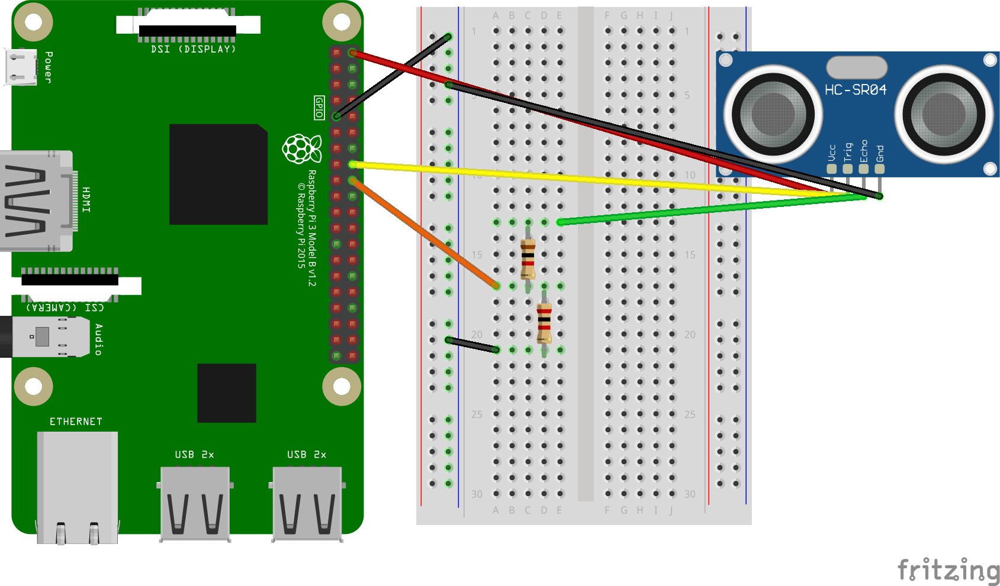

VCC to 5V (pin 2), GND to ground
Trig to GPIO 23 (pin 16)
Echo to GPIO 24 (pin 18) through a 1kΩ + 2kΩ divider
from gpiozero import DistanceSensor
from time import sleep
sensor = DistanceSensor(echo=24, trigger=23)
while True:
print(f"{sensor.distance * 100:.0f} cm")
sleep(0.1)
